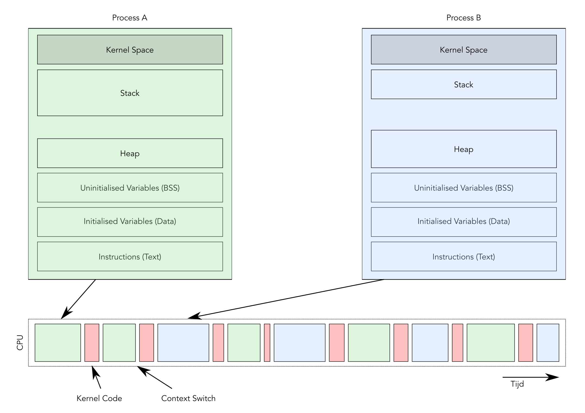

Processen, Scheduling en Communicatie
Embedded & Operating Systems 2
Inhoud
- Processen
- Multitasking
- Inter Process Communication
- Processen in Linux
Terugblik: een enkel proces
 Geheugenmodel Proces
Geheugenmodel Proces
Processen op één core
Meerdere Processen
Meerdere cores
Drie Processen, Twee Cores
Process State
Process State Diagram
Process Files
- Process IDs
/proc/PID process directory
/proc/PID/exe/proc/PID/cmdline/proc/PID/environ/proc/PID/stack- …
Threads
 Multithreaded Process
Multithreaded Process
- Subprocessen
- Eigen stack, registers
- Gedeelde resources
- Gedeelde code, eigen PC
Inhoud
- Processen
- Multitasking
- Inter Process Communication
- Processen in Linux
Context Switch

Scheduling
Strategiën
- Cooperative Multitasking
- Pre-emptive Multitasking
Pre-emptive Multitasking
- CPU interrupt
- Interrupt bewaart PC
- Interrupt roept handler aan
- Handler bewaart process state
- Handler doet z’n werk
- Handler roept de scheduler aan
- Scheduler kiest een proces
- Scheduler herstelt process state
- Scheduler start proces
Realtime
- Hard realtime
- Firm realtime
- Soft realtime
- Not realtime
Scheduling Strategiën
- Rate Monotonic Scheduling
- Earliest Deadline First
Inhoud
- Processen
- Multitasking
- Inter Process Communication
- Processen in Linux
Inter Process Communication
- Shared Memory
- Message Passing
Shared Memory

Shared Memory
Alternatief: Message Passing

Inter Process Communication
- Shared Files
- Sockets / Unix Domain Socket
- Message Queue
- Pipes
Inhoud
- Processen
- Multitasking
- Inter Process Communication
- Processen in Linux
Process-tree

SYS_exec en SYS_wait
SYS_exit
States (revisited)
 Process State Diagram
Process State Diagram
Wat hebben we deze les geleerd?
- Wat zijn processen en threads?
- Wat zijn de toestanden waarin een proces zijn?
- Wat is een context switch?
- Hoe werkt scheduling?
- Wat is realtime?
- Hoe werkt inter-process communication?
- Welke system-calls maken en beëindigen processen?